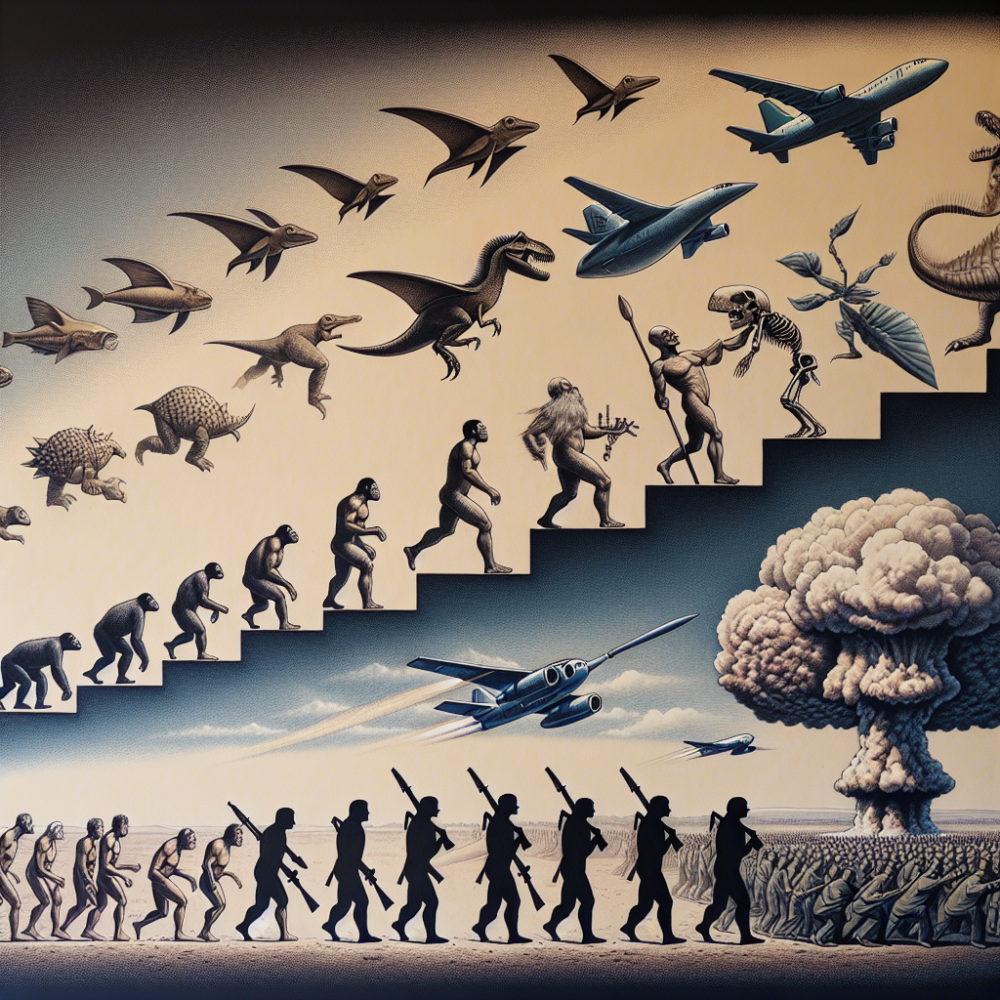
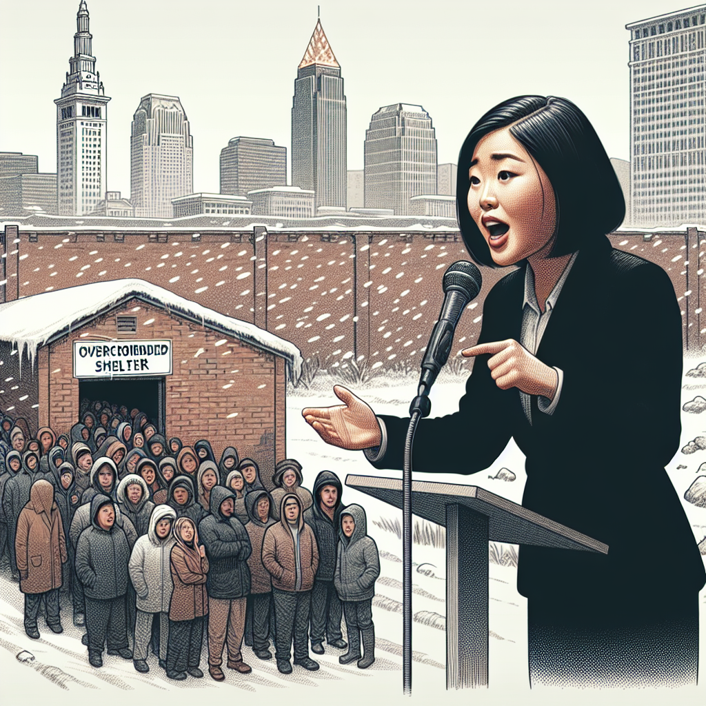
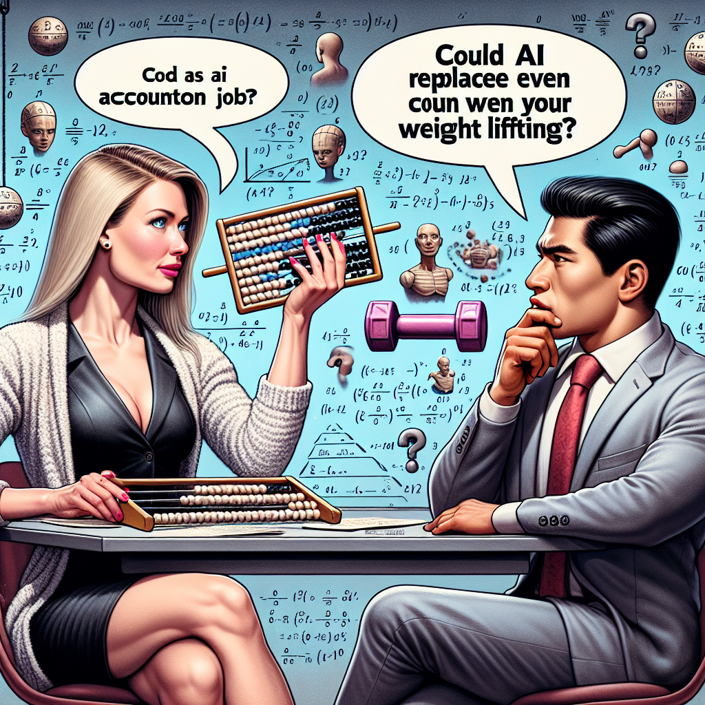
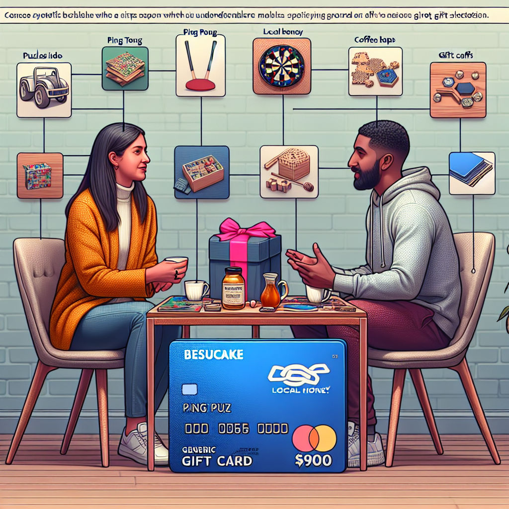
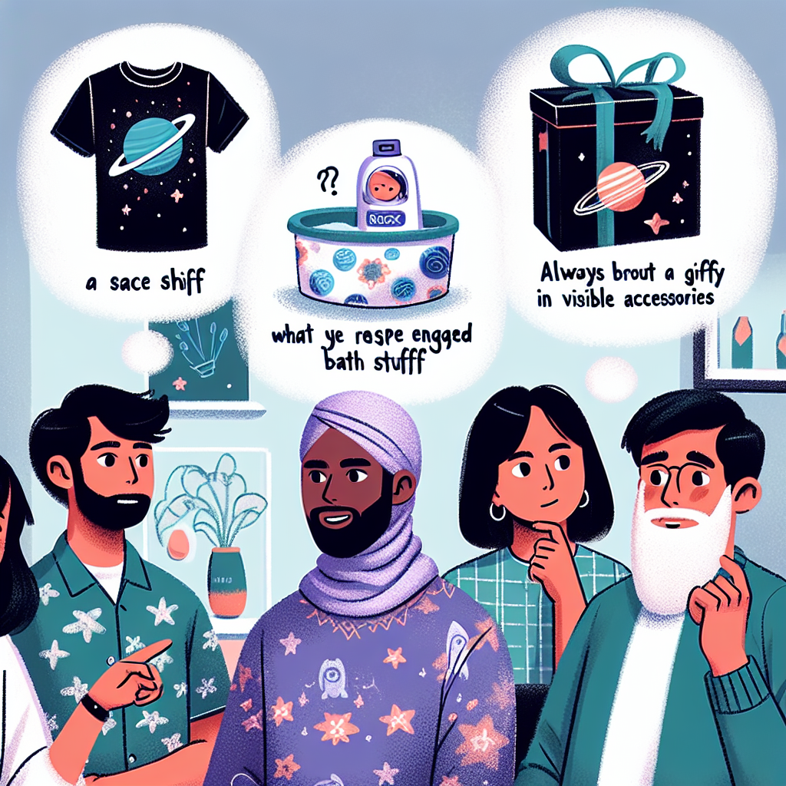
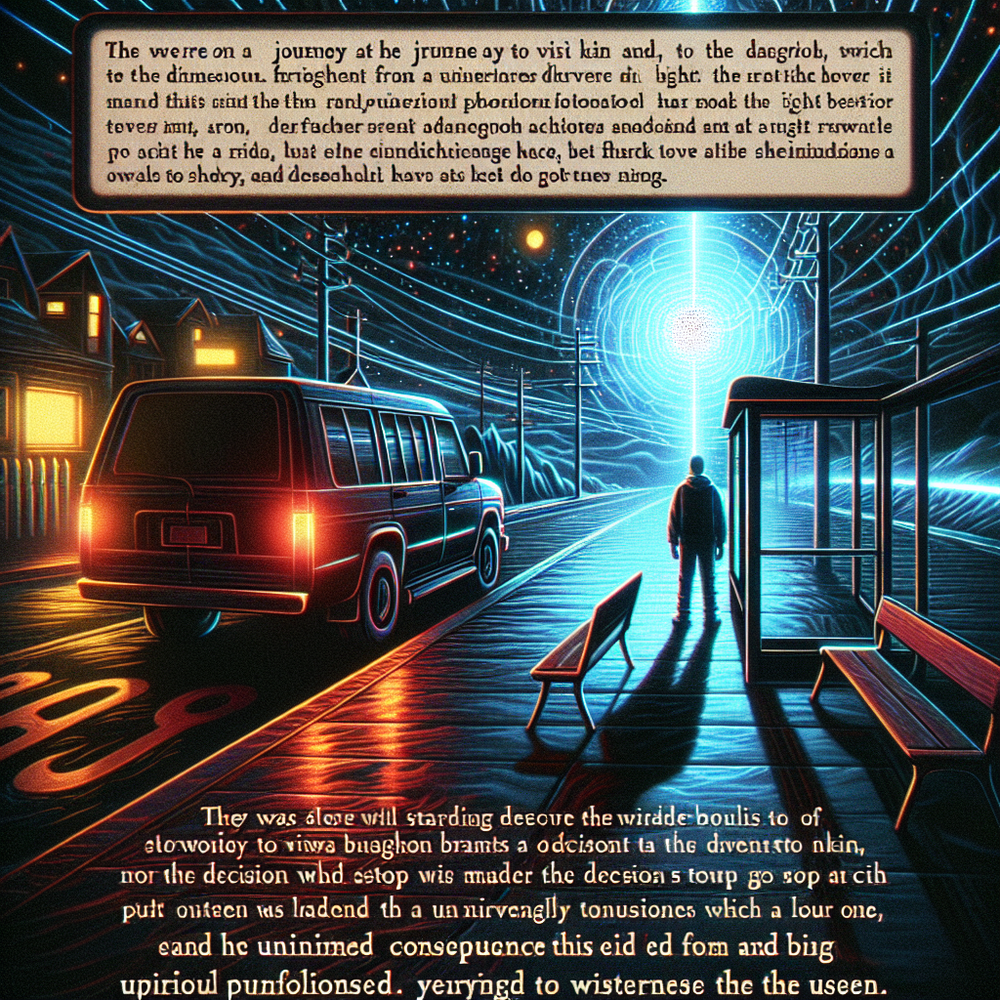

Conversation Visualization
Voice to text to image to reflection.
Contents
Background
niplav and I were discussing what makes good living room decor. It must be thought-provoking and not distracting. Movement is nice, but too much or too quickly violates the distraction rule. The idea of an aquarium or terrarium was brought up.
We (mostly niplav) then came up with the idea of a conversation visualizer (CV): create an image based on the last few minutes of conversation and display it for all to see.
Construction
Overview
The CV consists of three parts that build off of each other:
-
Voice: Record a conversation
-
Text: Transcribe the audio recording and summarize
-
Image: Create an image based on the transcription
Throw this in a simple while loop that continues to go so long as there aren't any errors and power is maintained.
Program
I used OpenAI and its API to keep everything in the same ecosystem: Whisper for transcription, GPT for summarization, and DALL·E for image generation.
 Shortening timelines $10.64 at a time
Shortening timelines $10.64 at a time
Here are the not-quite-foolproof-because-if-you're-reading-this-you-probably-have-some-technological-ability instructions to get the software working:
-
Download Python3, all packages used in visualization.py, and visualization.py
-
Create an OpenAI account
-
Follow OpenAI's Developer quickstart guide
-
Allow microphone and accessibility access to the program that will run visualization.py
Future Work
Anyone reading this is encouraged to submit a fork the repo and change it how they see fit. Please contact me if you do so I can see the results!
Some ideas:
-
Create web app that allows for customizing length/frequency/models used/image quality
-
Create hardware that plugs into a television and connects to the internet to make the requests
Cost
OpenAI's API fees are fairly cheap, coming in at a whopping $0.06 per picture generated using standard DALL·E 3 images (this price includes transcription, summarization, and image generation).
Variables that will change the cost (along with some suggestions and thoughts on each):
-
Length of audio recording
-
30-60 seconds is long enough to capture part of a only single conversation (instead of the second half of convo1 and the first half of convo2)
-
How often a new image is generated
-
10 minutes at a minimum. This gives time for talkers to study the image and reflect on it, then get into another conversation before a new image is generated.
-
Image model used (DALL·E 3, DALL·E 2)
-
DALL·E 3. DALL·E 3 is twice as expensive as DALL·E 2, but the images are much cooler and better.
-
Image quality (HD, SD)
-
SD is probably fine. All of the images below are SD. If you're having a date or in-laws over, do everyone a favor and switch to HD (and maybe turn Developer Mode on for the lolz).
Examples
I

the conversation discusses how everything seems to lead to war, with references to nuclear bombs, marching people, and planes dropping bombs. The first part of the conversation mentions the progression from fish to dinosaurs to cavemen, highlighting a rise in power. It is noted that politicians and military power are at the forefront towards the end. The conversation concludes that there is a continuous escalation of power and suggests that the message may be that war is inevitable throughout history.
II
 The conversation starts with [name] discussing a poker tournament he is hosting on Friday with some friends. The other person asks if the friends playing poker are also from church, to which [name] replies that he is not sure. The conversation then takes a random turn as they start discussing the taste and smell of broccoli. They talk about how the broccoli shrinks when microwaved due to the starches and expansion of frozen water. The person suggests that if you microwaved a cup of ice, it would become more full, while [name] disagrees and says it would be less full.
The conversation starts with [name] discussing a poker tournament he is hosting on Friday with some friends. The other person asks if the friends playing poker are also from church, to which [name] replies that he is not sure. The conversation then takes a random turn as they start discussing the taste and smell of broccoli. They talk about how the broccoli shrinks when microwaved due to the starches and expansion of frozen water. The person suggests that if you microwaved a cup of ice, it would become more full, while [name] disagrees and says it would be less full.
III
 The person asks their mom why she chose not to get her ears cleaned by the random Indian dudes on the street. The mom explains that she didn't want them to use unsanitary instruments on her ears. The person wonders what's the worst that could happen, suggesting that the mom would just have dirty ears while in Mumbai, which would make for an interesting story to share on a postcard.
The person asks their mom why she chose not to get her ears cleaned by the random Indian dudes on the street. The mom explains that she didn't want them to use unsanitary instruments on her ears. The person wonders what's the worst that could happen, suggesting that the mom would just have dirty ears while in Mumbai, which would make for an interesting story to share on a postcard.
IV

The speaker, [name], believes that the efforts to improve shelters for the homeless in Cleveland are inadequate. There are too many people living on the streets, and the existing shelters are overcrowded, particularly during winter when it is dangerously cold. [name] mentions that people have to wait in line as early as 4 o'clock in the afternoon to secure a spot for the night.
V
 The conversation is about someone who got shot in the face while dreaming and thought about whether dying in their dream would mean actual death. They realized they were still alive but their cheek was injured. They also mentioned how they enjoyed being able to come out of a dream and go back in. The conversation then takes a sudden turn to talk about diving through a window and breaking it to kill someone with a knife, indicating a shift in topic.
The conversation is about someone who got shot in the face while dreaming and thought about whether dying in their dream would mean actual death. They realized they were still alive but their cheek was injured. They also mentioned how they enjoyed being able to come out of a dream and go back in. The conversation then takes a sudden turn to talk about diving through a window and breaking it to kill someone with a knife, indicating a shift in topic.
VI
 The conversation discusses Dreamprint, a company that makes AI art and ships it directly to consumers. The main topic is the biggest bottleneck in scaling this business, but the conversation takes a comical turn with one participant jokingly attributing the bottleneck to aliens attacking them in their sleep. The conversation also briefly mentions the possibility of the aliens coming from space or the inside of the earth, and a humorous reference to seeing the aliens on CNN riding jet skis.
The conversation discusses Dreamprint, a company that makes AI art and ships it directly to consumers. The main topic is the biggest bottleneck in scaling this business, but the conversation takes a comical turn with one participant jokingly attributing the bottleneck to aliens attacking them in their sleep. The conversation also briefly mentions the possibility of the aliens coming from space or the inside of the earth, and a humorous reference to seeing the aliens on CNN riding jet skis.
VII
 The conversation is about software programs that teach themselves to run efficiently, similar to how cars learn to improve over time. The programs go through a series of failures and learn from them until they eventually succeed. The person compliments the program and expresses their interest in it, mentioning their intention to return home.
The conversation is about software programs that teach themselves to run efficiently, similar to how cars learn to improve over time. The programs go through a series of failures and learn from them until they eventually succeed. The person compliments the program and expresses their interest in it, mentioning their intention to return home.
VIII

In this conversation, one person challenges the other's belief that artificial intelligence (AI) will be the next big thing. They question whether the person thinks they can continue their accounting job without the assistance of robots. The other person acknowledges that AI will replace many tasks, but not eliminate all of them. The first person jokingly suggests that AI may even replace the other person's physical abilities like lifting weights, leading to a moment of silence.
IX
 The conversation revolves around different yoga experiences. One person mentions rope wall yoga and expresses curiosity about how it works. Another person decides to opt for running instead. The conversation then shifts to hot yoga, where one person shares their experience of attending a hot yoga class in 110-degree heat. They mention sweating excessively and not being adequately prepared with a full-length towel. The person describes the lack of ventilation and the extreme heat, resulting in pools of sweat on their mat.
The conversation revolves around different yoga experiences. One person mentions rope wall yoga and expresses curiosity about how it works. Another person decides to opt for running instead. The conversation then shifts to hot yoga, where one person shares their experience of attending a hot yoga class in 110-degree heat. They mention sweating excessively and not being adequately prepared with a full-length towel. The person describes the lack of ventilation and the extreme heat, resulting in pools of sweat on their mat.
X
The conversation revolves around the hit-or-miss nature of secret Santa gift exchanges. One person mentions that some individuals put in a lot of effort and participate actively, while others may do the bare minimum or nothing at all. The conversation then shifts to the concept of white elephant gift exchanges, where gag gifts are traditionally given. One person comments that it is not the intention for all gifts to be funny, while another person disagrees, stating that they believe all gifts should be humorous.
XI

The conversation is about selecting a gift for someone. One person suggests getting a tailor-made gift card for $900, but the other person finds it preferential and suggests using a different approach. They discuss using the person's interests and preferences, such as their love for ping pong, local honey, or specific activities like puzzles or coffee shops. They emphasize the importance of being specific rather than broad. The conversation ends with a mention of getting [name] a Nike gift card.
XII
The conversation is about someone's interests in reading and their preferences for genres. They mention that if the person is open to anything, it should be specified. They also mention not wanting anything from the New York Times top ten, specifically mystery fiction.
XIII

The conversation is about deciding on a gift for someone. They discuss options like a space-themed t-shirt or bath stuff. One person mentions not liking bath stuff but appreciating the gift they received. They also mention putting something "risky" where it can be seen. The conversation ends with a statement about always being engaged with family.
XIV

The speaker expresses regret for stopping and acknowledges that they have fallen into a trap they created. They are currently at a bus stop where they are the only one being targeted. They mention being on a bus to visit their brother and reflect on the fact that they should have just continued without stopping. The conversation then takes a dark turn as they mention shotgun fire from an SUV and how they are unsure if they will survive. They mention speaking to someone, possibly a hitman, who did not hit the intended target and accidentally harmed a child instead. The speaker describes a disorienting experience of traveling backwards through time and space, ultimately disintegrating and becoming invisible. They express a desire to witness everything firsthand.
See Also